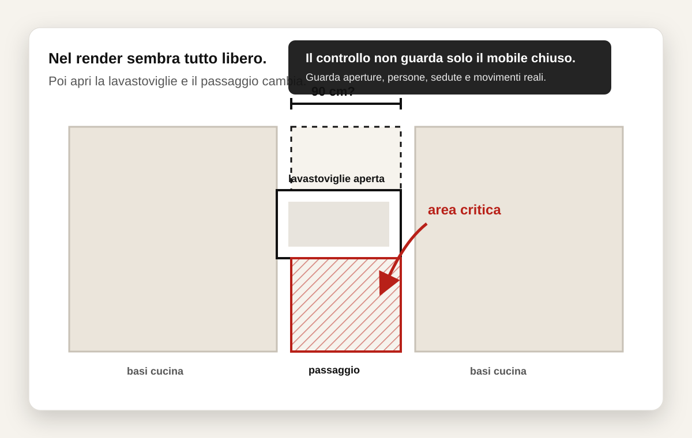

Micro caso reale
La lavastoviglie aperta bloccava il passaggio verso il terrazzo.
Nel render il progetto sembrava spazioso e corretto. Il problema è emerso solo immaginando l'uso reale della cucina aperta.

Cosa sembrava nel render
La cucina dava una sensazione di spazio libero.
Guardando il progetto da chiuso, il passaggio sembrava sufficiente. La distanza sulla carta appariva corretta e la composizione risultava ordinata.
Cosa cambiava davvero
Il problema compariva durante l'uso quotidiano.
Il punto importante
Molti problemi non si vedono nel progetto chiuso.
Una cucina funziona bene quando si riesce a usarla davvero: ante aperte, persone che si muovono, elettrodomestici in funzione e passaggi quotidiani. È qui che spesso emergono criticità invisibili nel render.
Controlla il tuo progetto
Vuoi capire se ci sono problemi nascosti nel tuo spazio?
Invia piantina, render o progetto cucina. Sistema 90G controlla passaggi, aperture e utilizzo reale prima della firma.
Invia il tuo progetto